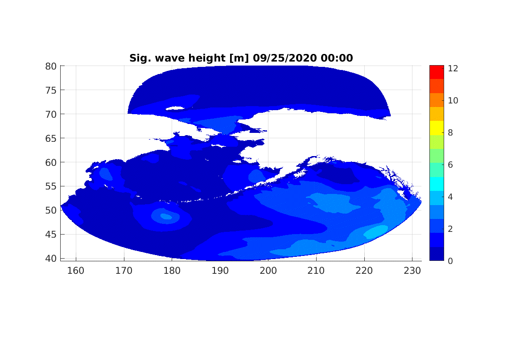
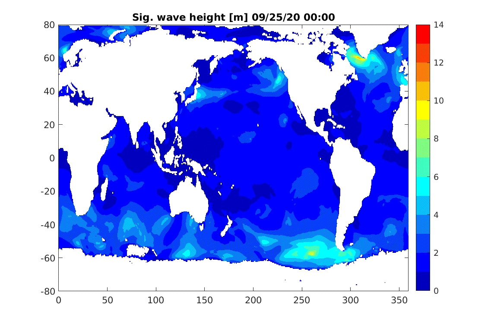
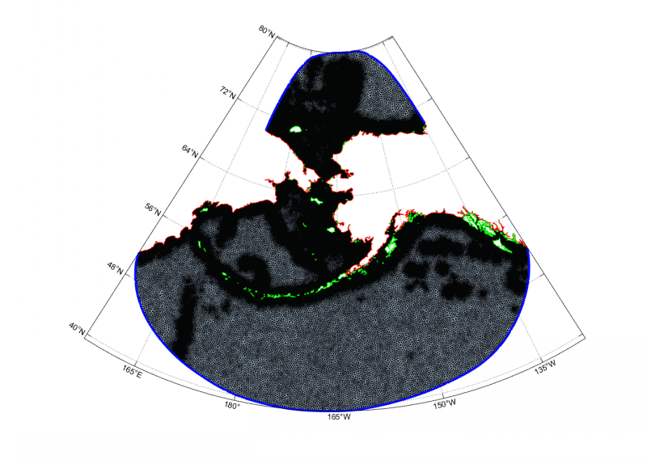

Alaska Coastal Ocean Forecast System - light version (ALCOFS-light)
DISCLAIMER:
Please DO NOT use this model results for navigation and safe purposes, the version is still under development for academic purpose only. Note that this research is a part of Computational Hydrodynamics Lab (CHL) in University of Notre Dame, IN, USA
UPDATES
Established on 07-15-2020: Light unstructured mesh, forecast two time per day (Base on at GMT 00:00 and 12:00 everyday automatically).
Generated on early May : Light unstructed mesh was generated for various purposes with several collabrators.
Overview
Due to the recent global weather changes, increasing water level along the coast of Alaska has been exposed by unexpected storms and experienced more critical events during winter season due to the ice effects ([1], [2]). The main purpose of Alaska Storm Surge forecasting system is to provide FAST and AT LEAST 5 days forecasts to communites with further circumstances. In this system, the ADCIRC [3] well known water circulation model has been adapted as a main engine and incorporated Alaskan forcing fuctions for predicting water level in several circumstances.
How the forecasting system works
The flowchart discribed this forecasting system WILL BE UPDATED.
Figure. ALCOFS Forecast Flowchart
Alaskan Water Wave Forecasts
WAVEWATCH3.

Figure. Global Wave Forecasts
Global Wave Forecasts
WAVEWATCH3.

Figure. Global Wave Forecasts
Light Mesh Developed
The light mesh showed in following figure is generated by using OceanMesh2D.
Following Figures show the mesh features such as mesh shapes including land boundary (Red), land boundary (Green) and Open Ocean Boundary (Blue) Conditions, entire resolution distribution and bathymetry in Alaska domain.
Shorelines: Alaskan shorelines has been combined with 4 different poroducts which are Global, NOAA Continually Updated Shoreline Product (CUSP), NOAA 20m and Alaskan local communities.

Figure. Unstructured triangular mesh, mesh resolution and mesh bathymetry
Forcing Functions
Tides: 8 tidal harmonic constituents on the open ocean boundaries, which are 4 semi-diurnal : M2, N2, S2, K2 and 4 diurnal : K1, Q1, O1, P1.
Brian R. Joyce, William J. Pringle, Damrongsak Wirasaet, Joannes J. Westerink, Andre J. Van der Westhuysen, Robert Grumbine, Jesse Feyenc: High resolution modeling of western Alaskan tides and storm surge under varying sea ice conditions, Ocean Modelling, Vol.141, 101421, 2019.
Christof Lüpkes, Vladimir M. Gryanik, Jörg Hartmann, and Edgar L Andreas: A parametrization, based on sea ice morphology, of the neutral atmospheric drag coefficients for weather prediction and climate models, Journal of Geophysical Research, Vol.117, D13112, 2012.
G. Ling, D. Wirasaet, J. Westerink, D. H. Richter, B. Joyce, W. Pringle, M. T. Contreras Vargas, Mindo Choi, K. R. Steffen, C. N. Dawson, A. Fujisaki-Manome, E. Myers, S. Moghimi, S. V. Vinogradov, A. Van der Westhuysen, A. Abdolali, and R. Grumbine: Studies on Parameterizations of Sea Ice Effect in a Storm Surge Model for Western Alaska, https://ams.confex.com/ams/2020Annual/videogateway.cgi/id/520392?recordingid=520392, AMS, 2020.